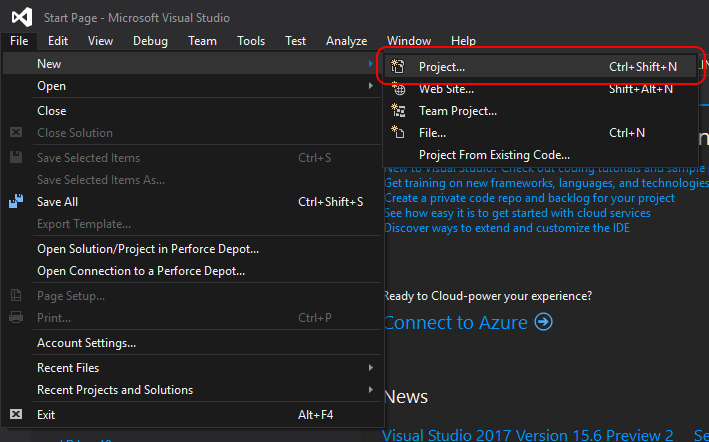
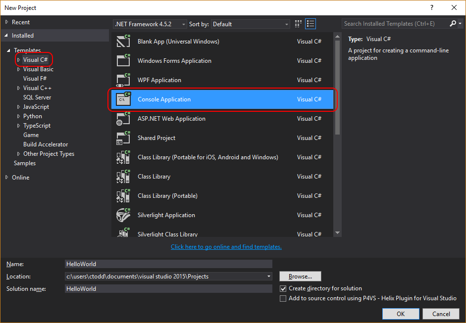
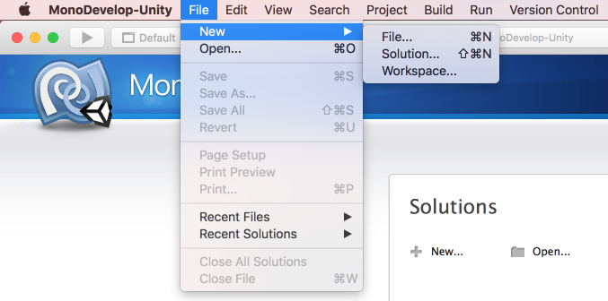
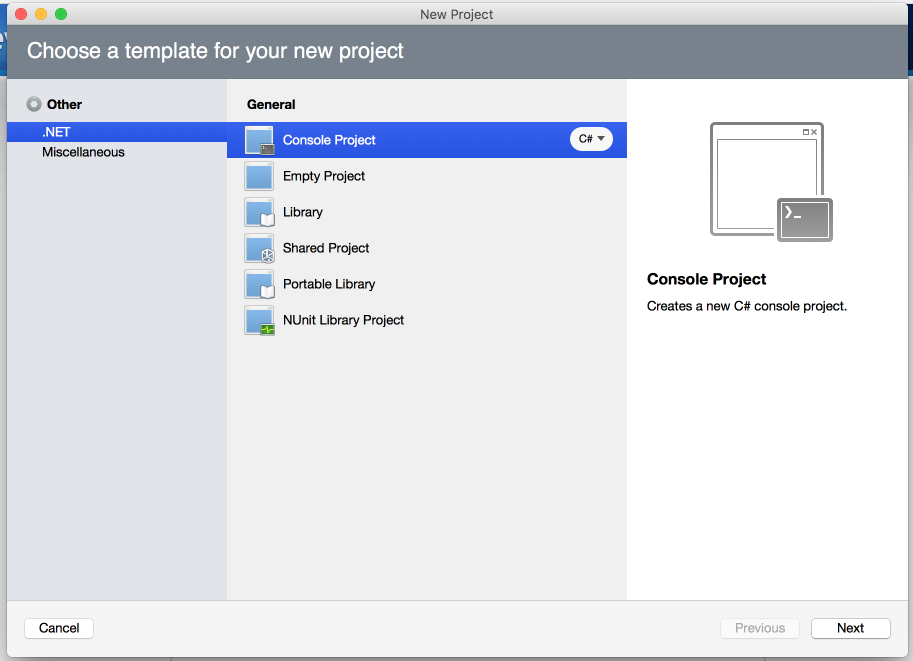
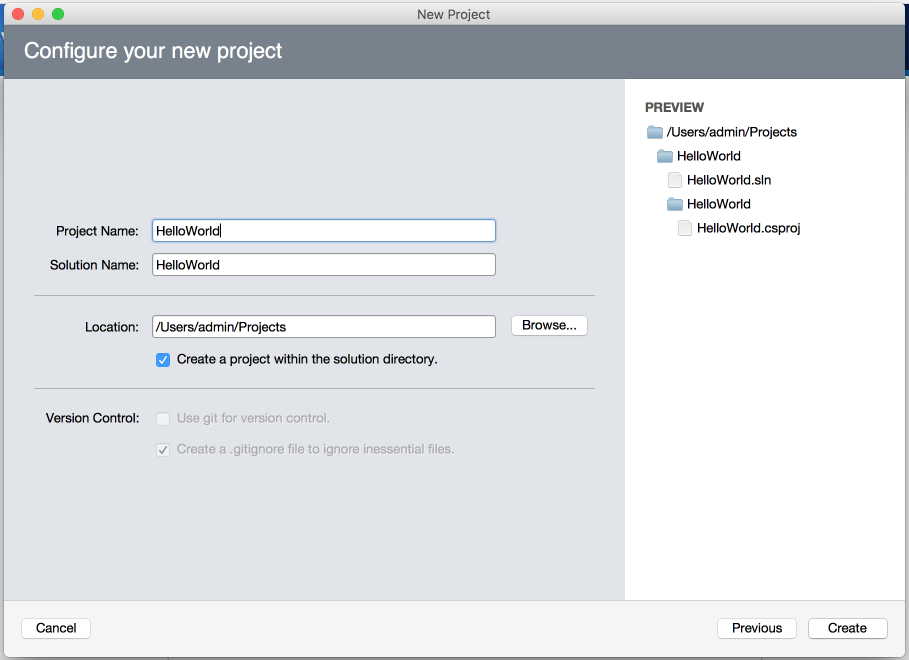

In this 10-week course, we will be learning how to make a simple game using Unity, a popular and widely-used game engine. We will also be learning the basics of the C# programming language to make things happen in our game worlds.
In this introductory lesson we will be looking at:
Level 2 will focus on two tools and how they interact with one another: the Unity engine and a C#-compatible IDE (Integrated Development Environment).
Unity is a powerful engine for games software that gained popularity through its accessibilty, both in terms of cost and ease-of-use. It is also well known for being able to export games to the vast majority of major consoles and devices without too much work from the developer.
An IDE, or "Integrated Development Environment", is a program used to write and test software. An IDE typically contains a text editor for writing code and can usually compile that code into something that the computer can read.
Unity provides loads of great options for editing worlds, animations and data, but it does not allow you to write code directly inside the editor. Instead, Unity hooks into an external IDE. Different IDEs have different features, pros and cons, so by using an external IDE Unity allows programmers to use the tools that they like best.
Unity has a free "Personal Edition" that can be downloaded from their website. Because an IDE is required to write code for Unity, they have included one for free along with the installation. The Windows version of Unity comes with the Visual Studio IDE and the Mac version comes with the MonoDevelop IDE. While there are very notable differences between these two peices of software, the code that we will be writing with them will be the same.
As obvious as it sounds, the most important thing to do when learning how to code is to bite the bullet and write lots of code, even (or rather, especially) when you're not feeling very confident in your abilities. Be sure to follow along and type out the code examples in the lessons rather than simply watching or copying and pasting the code; there is a lot about coding that you can't learn without writing it yourself. You will make mistakes, you will hit stumbling blocks and you will get frustrated. And that's great! It means you're learning!
It is an extremely common occurance as a programmer to get completely confounded, even when you've been doing
it professionally for years. There is such an astronomically large amount of knowledge to be
learned about software development that no one person could ever dream of knowing it all. A good
programmer's strongest skill is their ability to use the resources available to them to solve problems.
Most often this means either looking things up on the Internet or discussing the problem with peers.
In your case, you also have the Girl Force mentors available to you to answer questions.
Again, in order to improve at programming you must do it often. Even if you feel like you're limited by your abilities while you're learning, try to get creative and have fun pushing those abilities to their limits. We will also be providing excercises and challenges that you can attempt between classes.
One of the most fun parts of programming (or any creative medium) is showing off what you've done to your peers. When you're programming at home, try to come up with something that will surprise or impress your classmates!
In our C# classes, we will be working entirely outside of Unity and instead creating "console applications" which are typically very simple text-based programs. This is to avoid becoming confused by Unity's many features while we are trying to learn the basics and fundamentals of the C# programming language. Below, we will go over how to create a new console app using both Visual Studio and MonoDevelop.
Click File > New > Project...

Select "Visual C#" in the column on the left. Then, select "Console Application" from the list in the
center. Be sure to give your app a name at the bottom of the window (using letters, numbers and underscores -
no spaces), then click "OK".

Click File > New > Solution...

Select ".NET" in the column on the left. Then, select "Console Application" from the list in the
center and click "Next".

Give your project a name (using letters, numbers and underscores - no spaces) and click "Create".

Now that we've created a new C# console application, our IDE will have automatically generated a C# file for us with some sample code. This code will look a little different depending on which IDE you are using. In Visual Studio it will look like this:
using System;
using System.Collections.Generic;
using System.Linq;
using System.Text;
using System.Threading.Tasks;
namespace HelloWorld
{
class Program
{
static void Main(string[] args)
{
}
}
}
...whereas in MonoDevelop, it will look like this:
using System;
namespace HelloWorld
{
class MainClass
{
public static void Main (string[] args)
{
Console.WriteLine ("Hello World");
}
}
}
To make life easier, and to make sure we're all on the same page, let's erase all of this code and type out a simpler version of this empty project. We will go through our simple program line by line once it is finished and discuss what each line is doing, so don't worry if you don't understand it for now. Type the following into your IDE:
using System;
class Program
{
static void Main()
{
}
}
Both IDEs have a button that looks like a "Play" arrow near the top of the window. This button is used to run your application. Click it now to ensure that there are no errors and to see what your empty project does. If you do see any errors, double check that your code is identical to the code above. C# is a case-sensitive language, so watch out!
A program is like a script: it is a series of instructions that the computer must follow. Because there are no instructions in our program yet, the computer reaches the end of the script immediately and the program finishes. Visual Studio's console will open and close instantly, so all we'll see is a quick flicker. MonoDevelop's console, on the other hand, shows the text, "Press any key to continue..." when our program ends.
Let's add a couple of instructions to our program now. Add the following two lines of code in
between the curly braces directly below the line, static void Main():
static void Main()
{
Console.WriteLine("Hello World!");
Console.ReadLine();
}
Now when we run the program, we should be able to see a console window with the words, "Hello World!" written in it. The program then waits for the user to press the ENTER key before ending. Let's go back through the code and see how it's doing this.
In addition to being able to write code, we need to learn how to read and understand code as well. As mentioned before, a program is like a script that tells the computer what we want it to do. Just as we use sentences, clauses, verbs and nouns to write instructions in a human language, we use "statements", "expressions", "operators" and "operands" in C# respectively.
Instructions are written in "statements", which most closely resemble sentences in human language. Our "Hello World" program currently contains five statements - let's go through them one by one to see how our program is doing what it is doing. We will get into the nitty-gritty of C#'s "grammar" and "vocabulary" in a future lesson (collectively referred to as "syntax"), but for now let's just focus on a broad view of what each statement is doing.
TIP: If you type two forward slashes into your code, the computer will ignore the rest of the line, which means that you can write whatever you want and it will not break your program. This is called a "comment" and it is extremely useful for taking notes or for temporarily disabling a line of code. You should get in the habit of writing lots of comments as early as possible! While we're going over each statement, add a comment explaining what each line does in your own words.
using System;
A "using" statement tells the program that we will be using some other pre-existing code. This is
useful because we will almost always want to do something that has been done before without
reinventing the wheel. In this particular case, we want the ability to read and write text in the
console without having to tell the computer how to read and write. "System" is a library of
code (or a "namespace" as we call it in C#) which contains exactly that (among many other things).
If we were to say this instruction in English instead of C#, we might say, "I would like to have
access to the code in the 'System' library in this file, please".
class Program { ... }
There are endless concepts that we as humans have learned about throughout our lives that a computer
has no knowledge of whatsoever. A major component of writing C# is writing definitions of whatever
concepts are relevant to the program. This is where "classes" come in; any time you see the keyword
"class" in C#, it means we are defining a new concept to the computer. In this case, the concept that
we are defining is the program itself. The definition comes in three parts:
static void Main() { ... }
This is the main function of the program; all of the instructions that will be executed when we click the
run button are written between the curly braces of this statement, and when the closing curly brace is
reached, the program ends. We will look deeper into the meaning of each of the words used in this statement
in a future lesson.
Console.WriteLine("Hello World!");
Using the code we requested from the System library, this statement will write the words, "Hello World!"
into our console. You can make it write whatever you like by changing the text in between the double-quotes.
Be careful not to remove the quotes, though!
Console.ReadLine();
Once again using functionality from the System library, this statement will wait for input from the user
before allowing the program to continue. We do this to prevent the program from ending immediately. In
Visual Studio's console this is required, otherwise we would not be able to read the text that we had
written. It's not strictly necessary in MonoDevelop's console, but it's a good idea to get in the habit of
preventing your programs from ending prematurely.
We have a program now but it's a little boring; the user can't interact with it at all except to close it. Let's make a more exciting program by asking the user for input and using that input to make decisions. By listening to user input like this, we can make a simple choose-your-own-adventure style text adventure.
Create a new console application and name it something like "TextAdventure". Just like last time, all of
the instructions that we will be writing will be inside the body of the Main function (which is to
say, all of the code we will be adding should go inside of the opening and closing curly braces that
immediately follow the line, static void Main()).
using System;
class Program
{
static void Main()
{
// All of your code should go here!
}
}As we learned in Level 1, a variable is like a bucket of memory that we can store data in. When we need to store some information, we request this bucket of memory from the computer by creating (or "declaring") a new variable. When we declare a new variable in C#, we need to let the computer know what type of data we will be storing in it so that it can give us an appropriately-sized bucket. In this lesson we will only be dealing with one type of variable: a "string", which contains text data (and is so named because text is represented as a string of letters).
In order to declare a variable, we must write a variable declaration statement. The simplest form of a variable declaration statement contains only two things: the type of data that we want to store and a name for the variable so that we can continue to refer to it after the declaration. Remember to end the line with a semi-colon (which is like a period at the end of the sentence).
string myFirstVariable;This will give us a new string-type variable called "myFirstVariable" which, by default, will contain an empty string. If we want to change its default value, we can assign a string value to it inside of the declaration statement like so:
string myFirstVariable = "My custom default value!";Now, any time we write myFirstVariable into our code, it will behave as if we had written "My custom default value!" (or whatever text you stored inside of the varible). For example, we can have the program write out the contents of our variable in the console with the WriteLine function that we used in our Hello World program:
Console.WriteLine(myFirstVariable);There are a couple of important things to notice about this line: for one, after the variable declaration, we no longer specify the variable's type when referring to it; we simply refer to it by its name because the computer already knows what type of variable it is. Also, unlike writing text without a variable like we did in our Hello World program, we do not put double quotes around the string that we want to write.
Note that you can assign a new value to your variable at any time after it has been declared like so:
myFirstVariable = "A new and different line of text!!!";Now, rather than hard-coding the value of our string variable, let's allow the user to type something and store that text value instead. We'll start by asking the user to enter their name. Then, we will declare a new variable called name and, instead of specifying a hard-coded line of text to the right of the equal sign, we will use the ReadLine function:
Console.WriteLine("What is your name?");
string name = Console.ReadLine();We can add (or "concatinate") two or more string values together using the 'plus' sign. To do this, we simply write two string values next to eachother with the plus sign in between them, which will result in a new string value that appends the text in the string on the right of the operator to the end of the text in the string on the left. For example, if we write the following statement after we've declared and set the value of our name variable...
Console.WriteLine("Nice to meet you, " + name + "!");...we should see the words, "Nice to meet you, [NAME]!" written out when we run the program, with [NAME] being whatever the user typed.
Any real-world program needs to make decisions and behave differently based on a set of given conditions such as whether or not the user has pressed a button, what time of day it is, whether or not the user has launched the program before or any number of other things.
The most important and straight-forward way of having our program react to conditions is to use "if" and "else" statements. An "if" statement essentially check if an condition is met and executes a set of instructions if it is. Otherwise, those instructions are simply skipped. An "if" statement is comprised of three things:
So, for example, if we want to have our program react to a specific name, we can write the following:
if (name == "Girl Force")
{
Console.WriteLine("Hang on, you're an entire organization?!");
}In this example, if the user typed "Girl Force" as their name, the program will respond by writing the text, "Hang on, you're an entire organization?!"
Let's take a quick look at the condition we specified, name == "Girl Force". Translated into
English, this would mean "the value of our variable, name, is equal to 'Girl Force'". But why do we
two equal signs here instead of one?
This is because in C#, a single equal sign and double equal sign have different meanings. In fact, we have already seen the single equal sign when assigning values to our variables. A single equal sign is called the "assignment operator", and is used to take whatever value is to the right of it and store it inside the variable on the left. A double equal sign, on the other hand, is reffered to as a "comparison operator", and it gives us a true or false value depending on whether the values on either side of it are equal or not.
Very often we will want one thing to happen if a given condition is met, and another thing to happen if it's not. This is where "else" statements come in handy! An "else" statement always immediately follows an "if" statement and it is only executed if the "if" statement's condition was not met. Expanding on our above example, we can add an "else" statement like so:
if (name == "Girl Force")
{
Console.WriteLine("Hang on, you're an entire organization?!");
}
else
{
Console.WriteLine("Nice to meet you, " + name + "!");
}Now, we will only see the text, "Nice to meet you, [NAME]!" if the user did NOT enter "Girl Force" as their name.
We can also string together multiple "if" statements using "else" statements. Consider the following code, for example:
if (name == "Girl Force")
{
Console.WriteLine("Hang on, you're an entire organization?!");
}
else if (name == "Mario")
{
Console.WriteLine("It's-a you!");
}
else
{
Console.WriteLine("Nice to meet you, " + name + "!");
}This addition is referred to as an "else if" statement. What will happen here is the following:
Note that if you were to remove the "else" from the line, else if (name == "Mario")
and then set your name to "Girl Force", the line "Nice to meet you, Girl Force!" will be written
to the console. This is because removing the "else" from the "else if" statement breaks the chain
of conditions.
Using what we've learned today, write a text adventure game that asks the user to make choices which influence the outcome of the story. The story can be as simple or complex as you see fit. See below for a simple example.
// Let the computer know that we will be using pre-existing code from the "System" library in this file.
using System;
// Define the concept of our program to the computer by creating a new class.
class Program
{
// Define what this program does by creating its "Main" function.
static void Main()
{
// Write text to the console asking the player to input their name.
Console.WriteLine("What is your name?");
// Store the player's input into a variable so we can use it later.
string name = Console.ReadLine();
// Greet the player using the name that they provided to us.
Console.WriteLine("Greetings, " + name + "! Press ENTER to begin your adventure!");
// Pause the program by waiting for player input.
Console.ReadLine();
// Write out a story event and the options that the player has for what to do next.
Console.WriteLine("You see a bear running towards you! What do you do?");
Console.WriteLine("a) Fight it!");
Console.WriteLine("b) Run away!");
Console.WriteLine("c) Invite it to dinner!");
// Get the player's input indicating which option they'd like to choose.
string choice = Console.ReadLine();
// Write out the result of the choice that the player made.
if (choice == "a")
{
Console.WriteLine("You defeat the bear and have delicious bear steaks for dinner!");
}
else if (choice == "b")
{
Console.WriteLine("You get eaten. Awww...");
}
else if (choice == "c")
{
Console.WriteLine("You make a beautiful new friendship that lasts for the rest of your long, happy years.");
}
else
{
Console.WriteLine("Come on, " + name + ", play along...");
}
// Pause the app again so that the player can read the final line of text before the program ends.
Console.ReadLine();
}
}